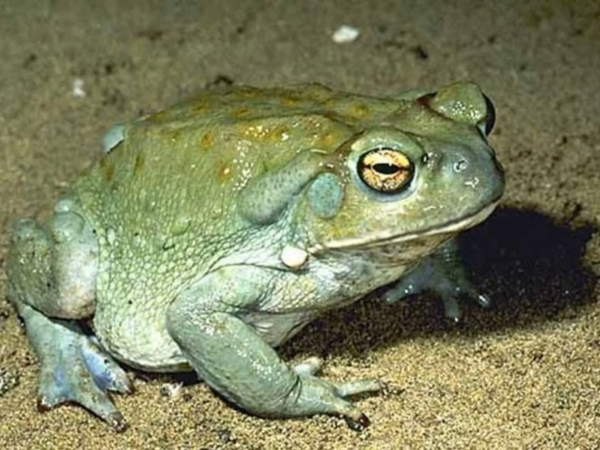

Descripción de su hábitat y estilo de vida:
Los sapos están presentes en todos los continentes y habitan una gran diversidad de ecosistemas, incluyendo desde bosques y praderas a zonas urbanizadas, aunque su hábitat preferido son las zonas húmedas y cercanas a fuentes de agua, como charcas, arroyos, lagunas, piletas y zanjas. es principalmente un animal activo por la noche. Sale de su agujero para alimentarse. Su dieta evoluciona a lo largo de su vida. En el estado de renacuajo se alimenta de bacterias y pequeñas plantas presente en el agua. Cuando crece y sale del agua, se alimenta de todos tipo de insectos y pqueños vertebrados. Los atrapa con su largo lengua pegajosa.
Características: